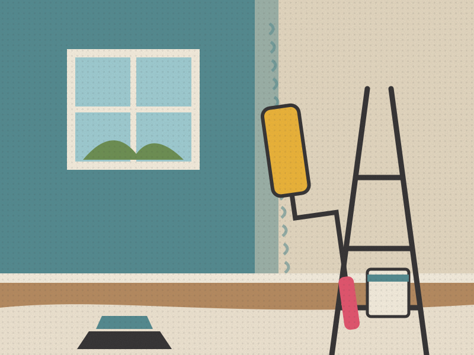
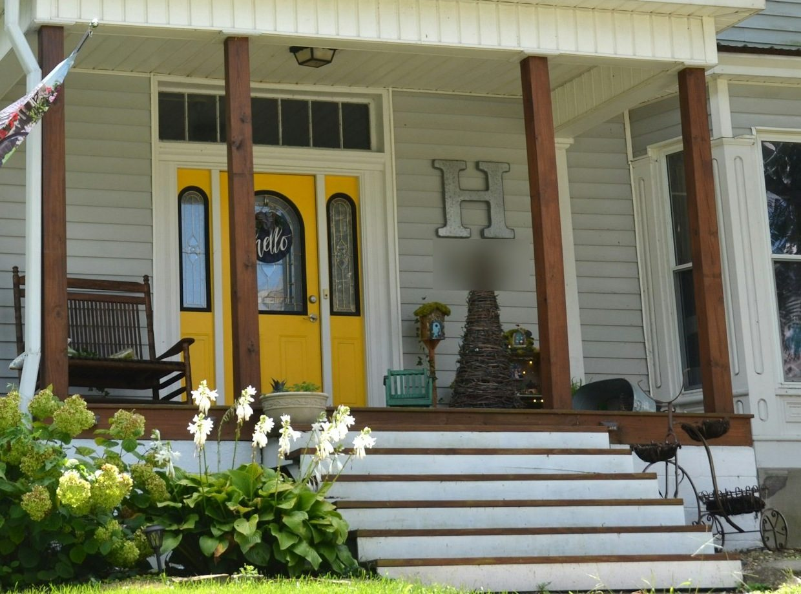
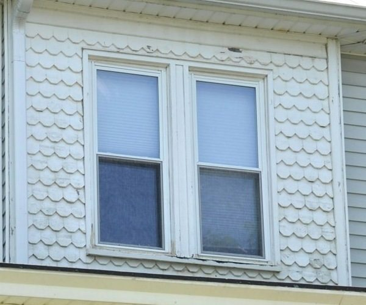
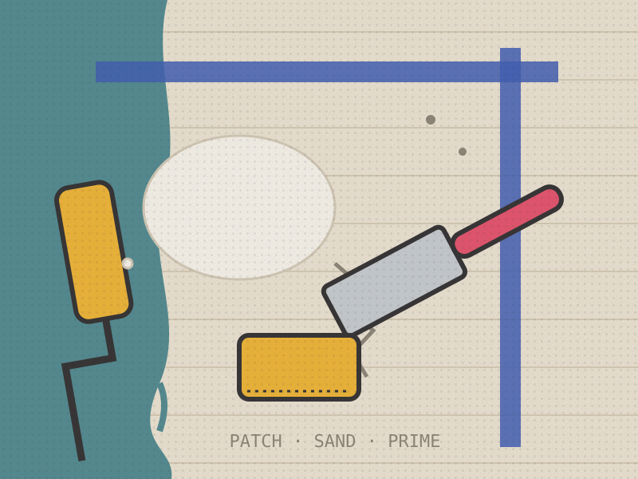
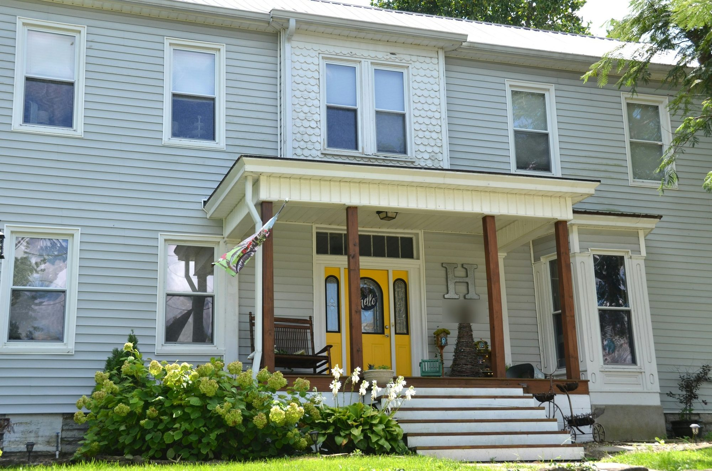
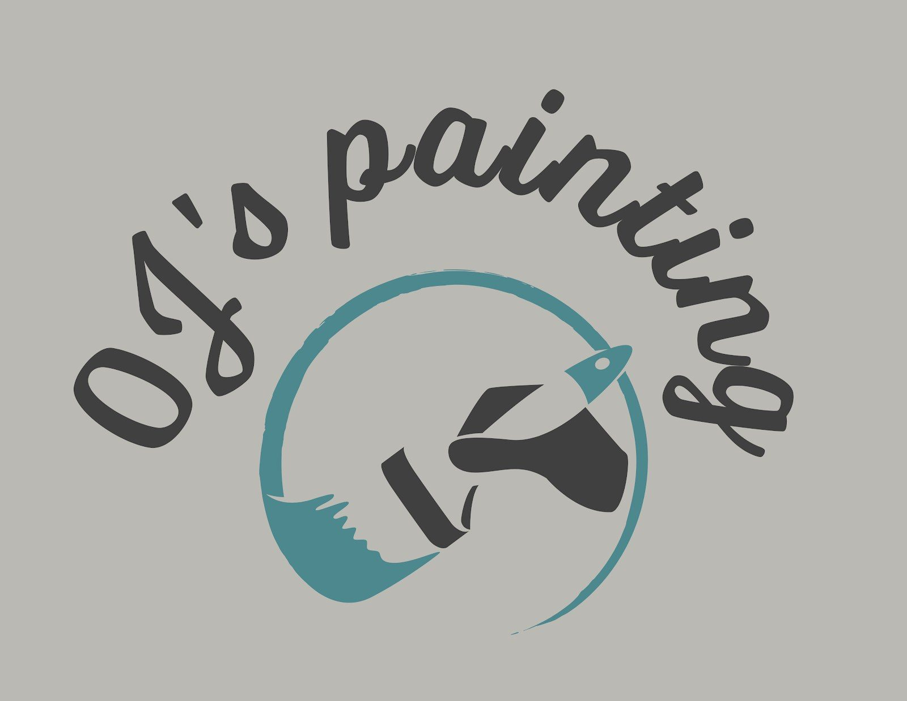
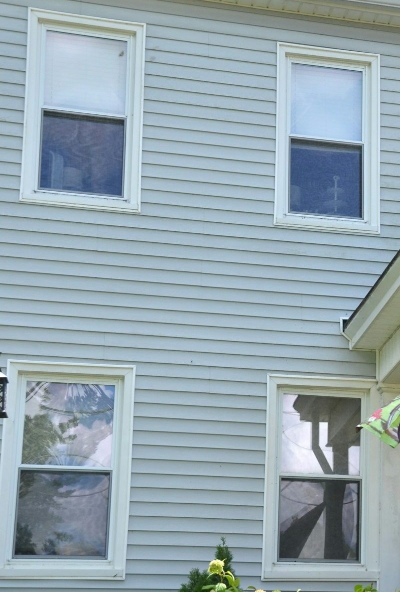
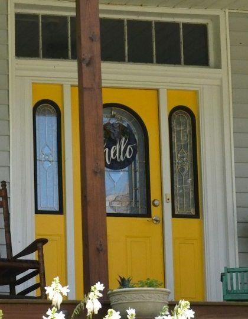

Greetings from
Austin, from OJ's Painting
A A U U S S T T I I N N
OJ's Painting Interior & exterior house painting TX 78744
Lettering filled with painted scenes and illustrative stock photos
Interiors Exteriors Trim & doors Patch & prep
POST CARD
Dear Austin,
TX AUSTIN 78744 To: a house in Austin, Texas TX 78744
Pick a postcard. Four kinds of paint work, one card each. Tap Flip it to read the back.

Greetings from the living room
THE BACK · INTERIOR
Signs a room is ready for paint:
Scuffs that will not wipe off Patches that show through the old colour A colour you have stopped liking

Greetings from the front porch
THE BACK · EXTERIOR
Signs the outside is due:
Chalky powder when you rub the siding Peeling or cracking on the sunny side Bare wood showing at the trim

Greetings from the trim
THE BACK · TRIM
Signs the trim needs a coat:
Yellowed or chipped baseboards Fingerprints around door frames A front door faded by the sun

Greetings from the patch job
THE BACK · PREP
Things to point out on the call:
Holes left by shelves and TV mounts Hairline cracks over doors Water stains on a ceiling

Say hello with a fresh coat. One colour on the front door. New siding colour from the street. Whatever the house needs, start with a call or a text.
Illustrative stock photo: Roger Starnes Sr / Unsplash
Which sheen? The finish matters as much as the colour. Tap a room to see the sheen most painters reach for.
OJ's Painting · sheen guide Austin, TX
Living & bedrooms
Eggshell
Flat Matte Eggshell Satin Semi-gloss Gloss
A soft glow that wipes clean better than flat, without showing every bump in the wall.
See the interior postcard ▸
General guidance. Every wall is different: ask about yours on the call.
The postcard rack. The OJ's Painting sign, a few Austin scenes painted for this page and some illustrative house photos. Tap any card to see it big.

OJ's Painting's own sign Painted for this page: sunset over the city 
Illustrative stock: siding and window trim Painted for this page: bluebonnet season 
Illustrative stock: a yellow front door
Austin 78744
Painted for this page